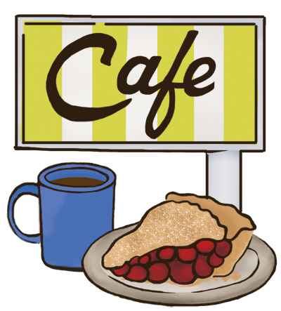
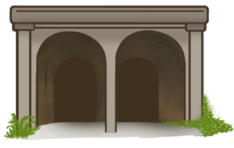
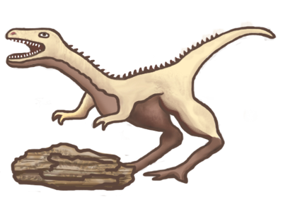
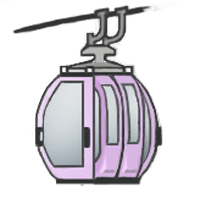

The five-hour drive along Interstate 90 from Seattle to Spokane is one of the state’s most diverse sightseeing experiences. Not only is the scenery breathtaking along every turn in the road, but the 280-mile drive offers plenty of prime year-round fishing locations — from the most densely populated urban locations to the vast forests, scablands, canyons, mountains and rolling farmlands. Here are some of the top summertime fishing activities sure to hook you into plenty of fish.
LAKE WASHINGTON
- Species: Cutthroat trout, smallmouth bass and yellow perch
- Dates: Year-round
- Where: Trolling near the I-90 and 520 bridges are best for cutthroat. The shoreline on the east side of Mercer Island south to Renton is a bass haven. The banks from Seward Park north to Mount Baker and Madison Park areas are perch hot spots. <%= t.include("_leaflet.html", { lat: 47.6215474, lng: -122.25575600000002 }) %>
Nestled between Seattle and Bellevue, the lake offers plenty of fish to catch with ample public shoreline access. Great piers can be found at Seward Park, Gene Coulon Park in Renton, Luther Burbank Park on Mercer Island, Waverly Park, Marina Park and Old Ship Museum Park in Kirkland, Mount Baker, Madison Park, and Leschi. Fishing is best for cutthroat from April to October; bass from May to September; and yellow perch from April to October.
Lake Sammamish
Lake Sammamish is located on the north side of I-90 in Issaquah and offers virtually the same kind of species to catch as Lake Washington. Hatchery kings and coho can also be had in late summer. <%= t.include("_leaflet.html", { lat: 47.6084598, lng: -122.0878197 }) %>
Rattlesnake Lake
Rattlesnake Lake is a good trout fishery with an increased daily catch limit of five trout with no size restriction through Sept. 30. It has selective gear rules and will switch to catch-and-release beginning Oct. 1. Take Exit 32 off I-90 on Cedar Falls Road SE. <%= t.include("_leaflet.html", { lat: 47.430526, lng: -121.774424 }) %>
Twede's Café in North Bend
Twede’s Café in North Bend was built in 1941 and made famous by the TV show "Twin Peaks," which immortalized the cafe’s cherry pie and "Damn fine cup o' coffee!" Take Exit 27 off I-90 and head north on SE North Bend Way to the café on the right hand side of road. <%= t.include("_leaflet.html", { lat: 47.495205, lng: -121.786789 }) %>
John Wayne Pioneer Trail
John Wayne Pioneer Trail, located in Iron Horse State Park, offers stupendous natural scenery with camping, hiking, mountain biking and a 2.3-mile rail tunnel under Snoqualmie Pass (usually open from late spring to fall). Take Exit 32 off I-90. <%= t.include("_leaflet.html", { lat: 47.4342937, lng: -121.7502547 }) %>
LAKE KEECHELUS
- Species: Kokanee and burbot
- Dates: Year-round
- Where: Better known as “Stump Lake,” this giant natural lake covers more than 2,408 acres, and is three miles southeast of Snoqualmie Pass off I-90. Take the Hyak Exit to the boat launch and parking area. <%= t.include("_leaflet.html", { lat: 47.3525597, lng: -121.3734193 }) %>
Kokanee measure 8 to 12 inches with a 10 kokanee daily limit, plus a two-fish 12-inch minimum size trout daily limit. If kokanee fishing is slow, try jigging for burbot (freshwater cod). Note: Launching a boat is poor in late summer.
YAKIMA RIVER
- Species: Rainbow trout
- Dates: Year-round
- Where: The famed ripples of this blue-ribbon trout fly-fishery are within sight of drivers zipping up and down I-90. Locals refer to this section as the “Farmland Stretch” as it twists and turns from Thorp downstream to the Yakima River Canyon south of Ellensburg. <%= t.include("_leaflet.html", { lat: 47.1890125, lng: -120.9574127 }) %>
While the majority of anglers will float on pontoons, rafts or drift boats, there are numerous public-access points for bank anglers. Trout measuring up to 20 inches or more feed on grasshoppers and stoneflies that reside on the surface, and fly-anglers do well using gaudy imitations of those insects. This summer due to low water flows, anglers can also cast using dry-flies.
Thorp Fruit & Antique Mall in Thorp:
Thorp Fruit & Antique Mall in Thorp is a 60-year-old, third generation family-owned establishment off Exit 101 west of Ellensburg. They offer fresh fruit and vegetables with a wide variety of candies, ice cream and antiques. <%= t.include("_leaflet.html", { lat: 47.054008, lng: -120.66331 }) %>
Campus U-Tote-Em Burgers in Ellensburg:
Campus U-Tote-Em Burgers in Ellensburg is an iconic fast-food eatery serving up a wide variety of burgers, shakes and other treats. Established in 1947, it is located just across the street from Central Washington University. <%= t.include("_leaflet.html", { lat: 47.000557, lng: -120.53575799 }) %>
COLUMBIA RIVER BELOW VANTAGE
- Species: Sockeye salmon
- Dates: July
- Where: The best fishing area is below Wanapum Dam located about five miles downstream from I-90. <%= t.include("_leaflet.html", { lat: 47.3525597, lng: -121.3734193 }) %>
The preseason forecast calls for a whopping 394,000 sockeye to return to the mouth of the Columbia. Many are bound for the Okanogan River system, and will pass the I-90 crossing at Vantage. A new boat launch is located on Huntzinger Road on the west side of the Columbia south of Vantage. Fishing peaked last year around July 10, but good fishing can be had through July. Troll very slowly using a short 12- to 15-inch leader with a double-hook rig attached to a small pink plastic squid "hootchie skirt" laced with a jarred shrimp bait and a Mack’s Lure Smile Blade. This is an excellent place for smallmouth bass that can be caught near the riprap along the interstate’s north side.
Ginkgo Petrified Forest State Park near Vantage:
Ginkgo Petrified Forest State Park near Vantage is regarded as one of the most unusual fossil forests in the world with petrified wood from a variety of trees. The fossil forest was discovered in the early 1930s during highway construction and is a registered national historic natural landmark preserve. <%= t.include("_leaflet.html", { lat: 46.900828, lng: -119.992756 }) %>
MOSES LAKE
- Species: Walleye, yellow perch, rainbow trout and bass
- Dates: Year-round
- Where: This giant lake measuring more than 6,727 acres is located in Grant County, and a section can be seen by drivers who cross the main waterway on I-90. <%= t.include("_leaflet.html", { lat: 47.1079901, lng: -119.3182182 }) %>
The lake is known to produce some of the largest yellow perch in the state. State Fish and Wildlife fish surveys found a high abundance of walleye (some exceed 10 pounds) and smallmouth bass up to and larger than five pounds. Depending on the time of year, the lake can generate decent rainbow trout fishing.
SPRAGUE LAKE
- Species: Steelhead, rainbow trout, Lahontan cutthroat trout and largemouth bass
- Dates: Year-round
- Where: The lake is located two miles west of the city of Sprague, bordering the south side of I-90 off Exit 245. <%= t.include("_leaflet.html", { lat: 47.254235, lng: -118.0697367 }) %>
It is not uncommon to catch rainbow trout up to 22 inches. To spice it up, 369,000 juvenile hatchery steelhead were planted in the fall of 2014, and are now averaging 15 to 16 inches with many expected to grow even larger. Largemouth bass in the 2- to 5-pound range are often seen in catches. State fishery also planted channel catfish several times in recent years.
Fishtrap Lake:
Fishtrap Lake is an "I-90 Gem" at the Fishtrap Exit east of Sprague. It is managed as a rainbow trout fishery and has a small resort and campground with boat rentals and boat ramp. <%= t.include("_leaflet.html", { lat: 47.35648, lng: -117.8244932 }) %>
Spokane River
Spokane River offers the chance to catch redband rainbow trout, and is mainly catch-and-release fly-fishing along I-90 near Liberty Lake. You can also catch smallmouth bass, but follow the single barbless hook rule. <%= t.include("_leaflet.html", { lat: 47.6797206, lng: -117.1348572 }) %>
Spokane River Centennial Trail
Spokane River Centennial Trail is a scenic 37-mile paved recreational trail that follows the Spokane River to Nine Mile Falls and continues to the Washington/Idaho state line. <%= t.include("_leaflet.html", { lat: 47.675248, lng: -117.4124669 }) %>
LIBERTY LAKE
- Species: Rainbow and brown trout
- Dates: Open now through Oct. 31
- Where: It is located in Spokane County just east of Spokane Valley and west of the Idaho-Washington state border. Take Exit 296 to reach this 706.1-acre lake. <%= t.include("_leaflet.html", { lat: 47.648506, lng: -117.0830154 }) %>
Rainbow trout up to 20 inches and brown trout hit the eight-pound mark. It is one of the few eastside lakes that has walleye up to 10 pounds, although not overly numerous. It is a popular largemouth (up to 6 pounds) and smallmouth (up to 3 pounds) bass fishery. Mix in bluegill sunfish, yellow perch and black crappie, and you’ve got a diverse bunch of fish to catch. There is a nice campground on the southeast corner operated by Spokane County Parks and a state Fish and Wildlife launch on the north end of the lake.